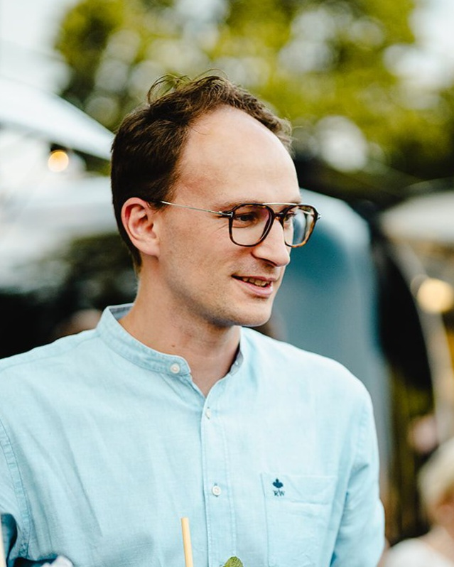

Ik ben Peter Rosa en dit is mijn online cv. Na mijn opleiding ben ik aan de slag gegaan als Eindredacteur / Project Manager bij dhaxley Translations, een vertaalbureau in Herentals. Ondertussen heb ik twee overnames meegemaakt, eerst door Ubiqus en recent door Acolad, de grootste vertaalgroep in Europa.
